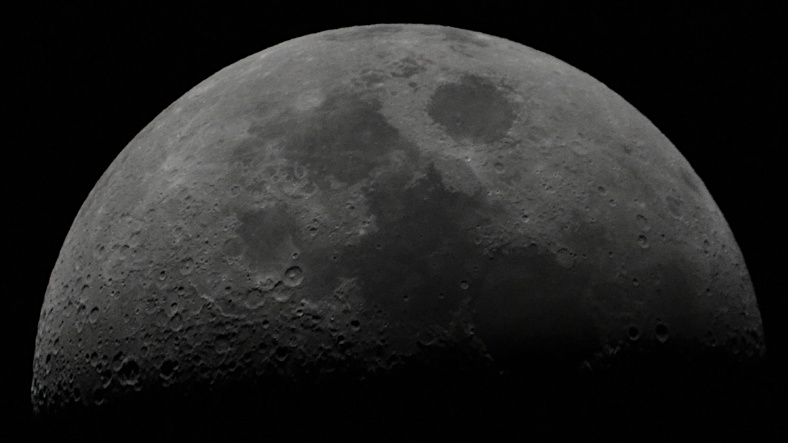
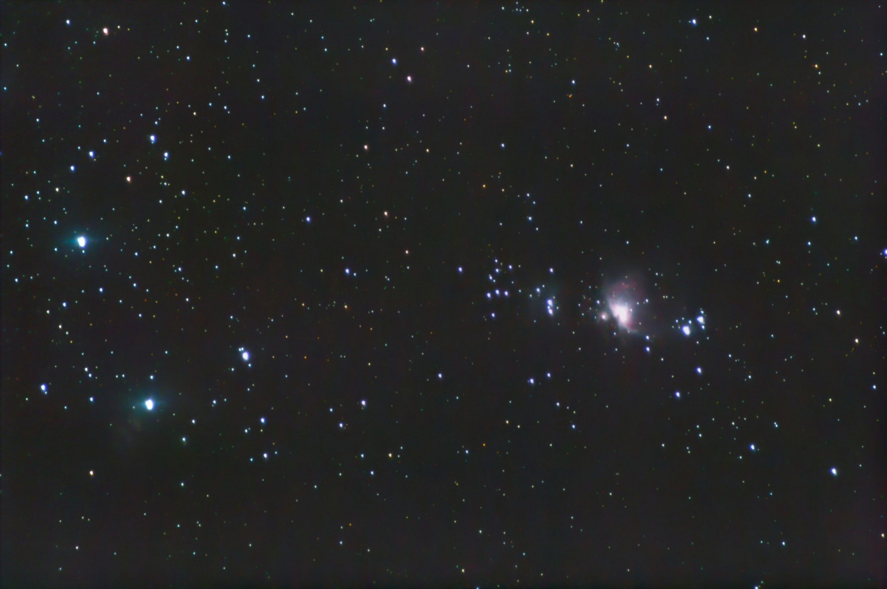
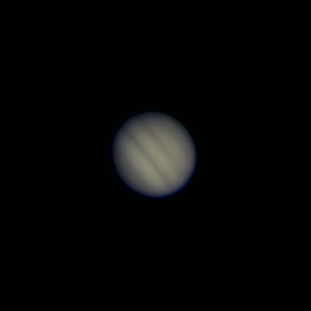
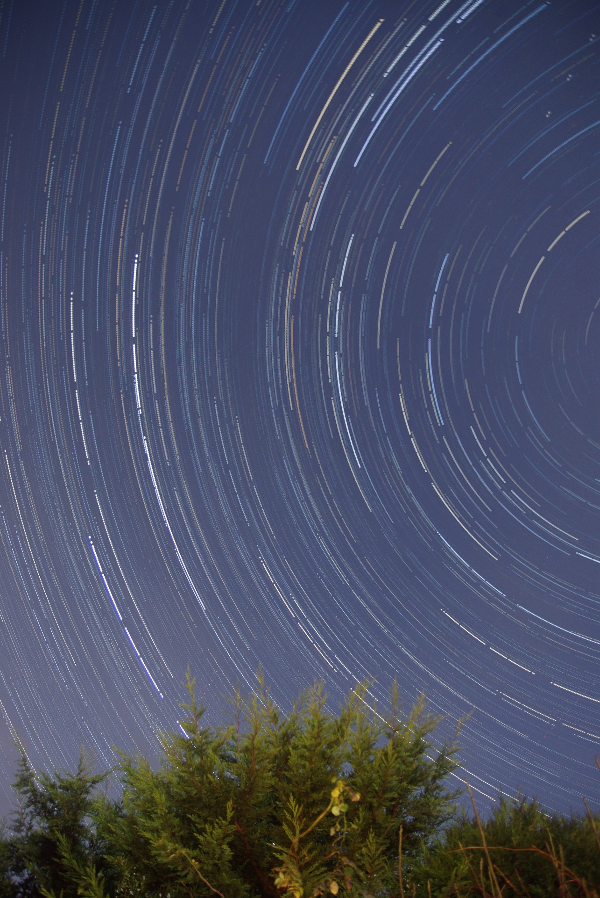
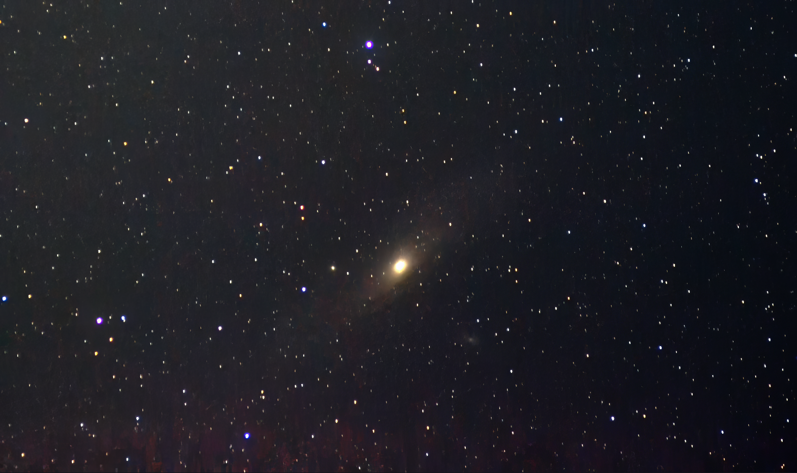
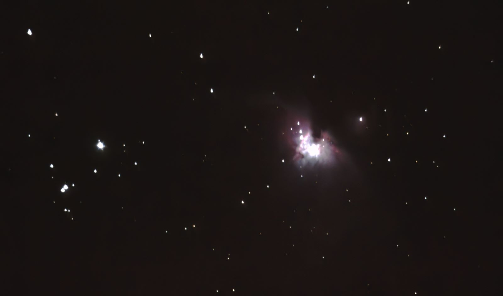
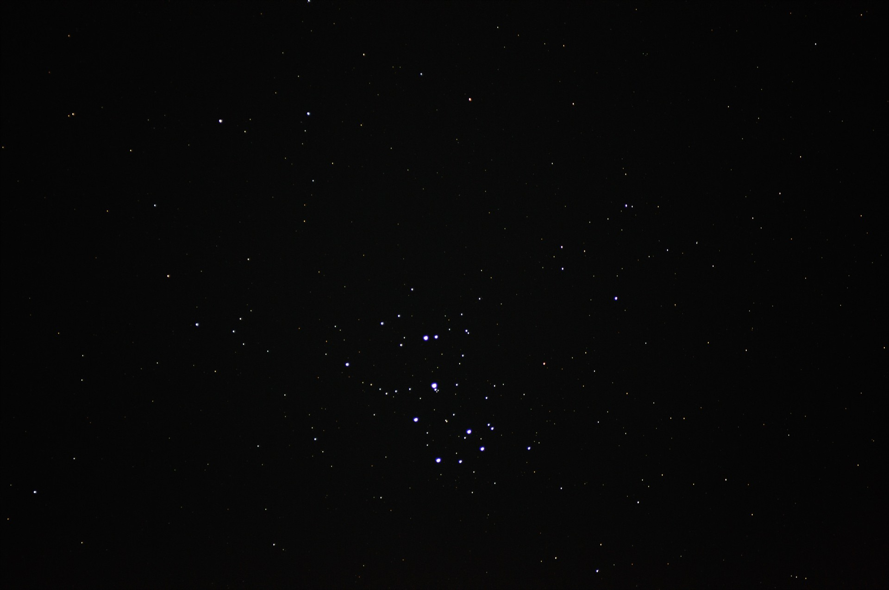
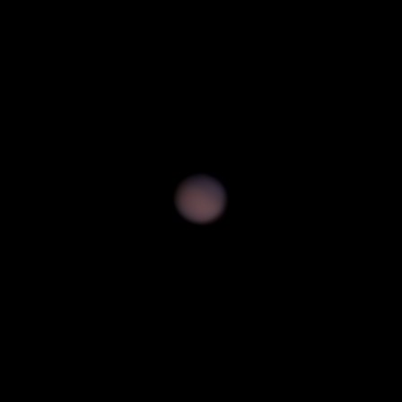
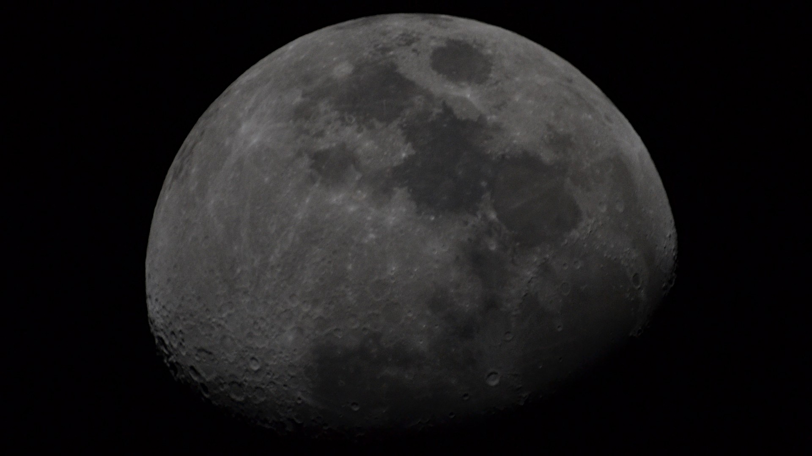

My astrophotography portfolio

Shot with a Nikon D3100, Meade ETX 90. Tracked with LXD55 mount. Single shot processed in GIMP.

Shot with a Nikon D3100 200mm, untracked. About 5 mins total exposure time, untracked. B5 Skies. Stacked in DSS then processed in GIMP.

Shot with a Meade ETX 90 on a LXD55 mount. ~1min video using the Bresser MikrOcular HD planetary cam, stacked in Autostakkert and wavelet processed in Registax.

Shot with a Pentax K10D, 50mm lens using a DIY Raspberry Pi Pico Intravalometer.
Here are some of my photos

Andromeda galaxy shot with a Nikon D3100, 200mm
lens. Stacked in DSS, stretched in GIMP.

Orion Nebula shot with a D3100 on my DIY 6" Newtonian
(needs collimation)

Plieades star cluster shot with a Nikon D3100, 200mm
lens. Stacked in DSS, stretched in GIMP.
Shot with a Meade ETX 90 on a LXD55 mount. ~1min video using the Bresser MikrOcular HD planetary cam, stacked in Autostakkert and wavelet processed in Registax.

Mars shot with a Meade ETX 90 on a LXD55 mount. ~1min video using the Bresser MikrOcular HD planetary cam, stacked in Autostakkert and wavelet processed in Registax.

Shot with a Meade ETX 90 on a LXD55 mount using a Nikon D3100. Single frame processed in GIMP.
Shot with a Nikon D3100, Meade ETX 90. Tracked with LXD55 mount. Single shot processed in GIMP.
Shot with a Nikon D3100 200mm, untracked. About 5 mins total exposure time, untracked. B5 Skies. Stacked in DSS then processed in GIMP.